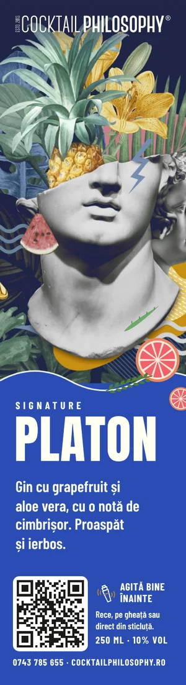
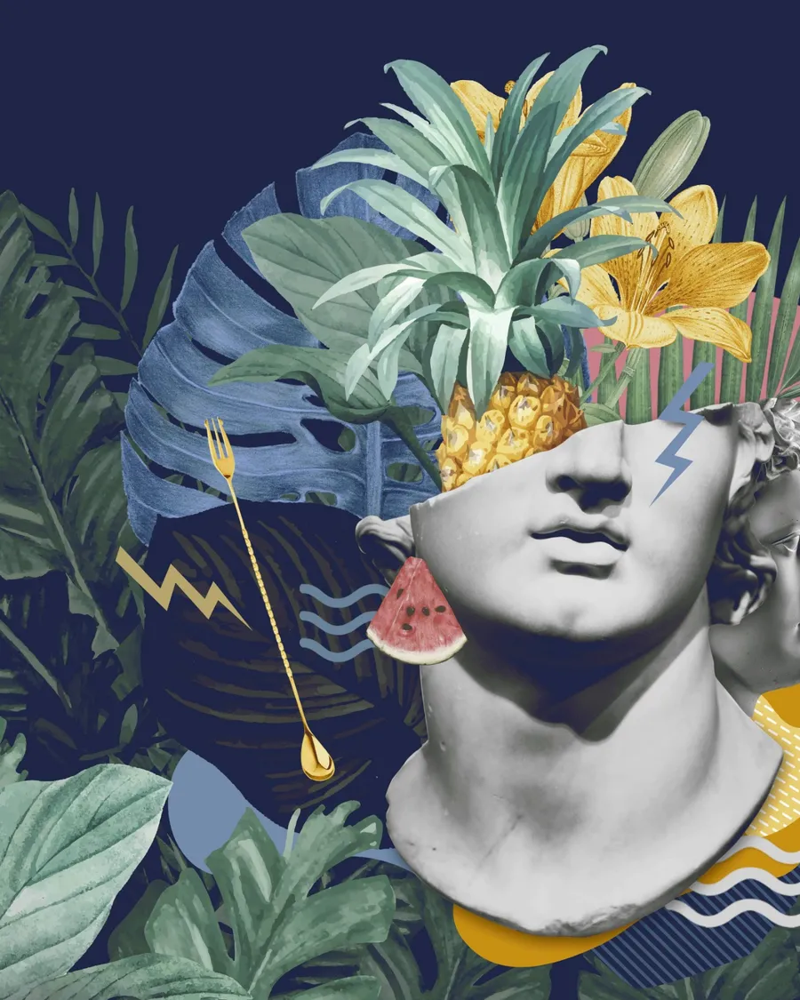
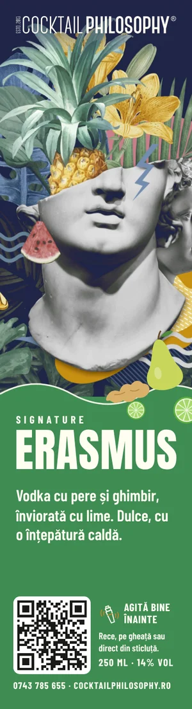
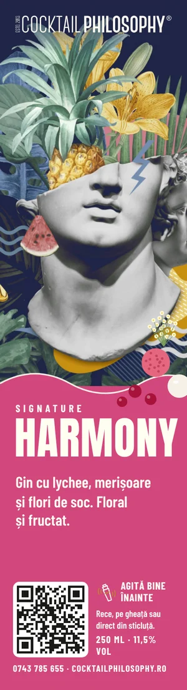
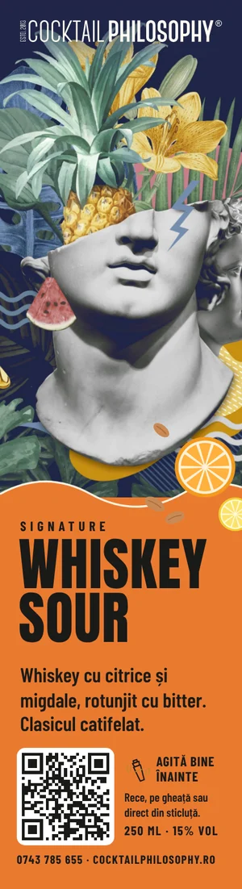
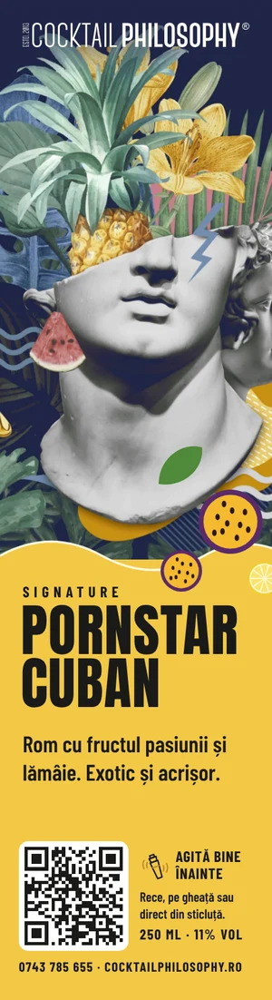

Signature
Platon
Gin cu grapefruit și aloe vera, cu o notă de cimbrișor. Proaspăt și ierbos.
250 ml · 10% volSignature · la sticluță · 250 ml
Aceleași cocktailuri pe care le servim la bar, pregătite de noi și puse în sticluțe. Pentru evenimente mici, baruri și restaurante care vor calitate constantă, fără bătăi de cap.

Povestea sticluțelor
Din 2013 stăm în spatele barului la nunți, petreceri și evenimente de firmă. Am învățat că un cocktail bun înseamnă mai mult decât o rețetă: înseamnă siropuri făcute de noi, ingrediente proaspete și răbdarea de a gusta până când iese exact cum trebuie.
Sticluțele sunt felul nostru de a pune toate astea într-un loc mic. Luăm cocktailurile signature ale casei, cele cu nume de filosofi, le pregătim la depozit după aceleași rețete ca la bar și le gustăm până ies echilibrate. Fiecare sticluță are același gust ca precedenta.
Le-am gândit pentru cei care vor cocktailuri bune fără un bar întreg: o petrecere mică acasă sau la birou, un restaurant, o terasă, un bar care vrea să servească un cocktail de top fără barman specializat și fără risipă. Fără shaker, fără rețete de învățat, fără bătăi de cap. Doar cocktailul, așa cum îl facem noi.
Cum se servește
Sticluța stă la frigider, la 0–4 °C, până când o deschizi.
Am lăsat special loc gol în sticluță, ca să poți agita cocktailul ca la bar.
Toarnă-l peste gheață într-un pahar sau bea-l direct din sticluță, rece.
Seria Signature

Gin cu grapefruit și aloe vera, cu o notă de cimbrișor. Proaspăt și ierbos.
250 ml · 10% vol
Vodka cu pere și ghimbir, înviorată cu lime. Dulce, cu o înțepătură caldă.
250 ml · 14% vol
Gin cu lychee, merișoare și flori de soc. Floral și fructat.
250 ml · 11,5% vol
Whiskey cu citrice și migdale, rotunjit cu bitter. Clasicul catifelat.
250 ml · 15% vol
Rom cu fructul pasiunii și lămâie. Exotic și acrișor.
250 ml · 11% volPentru evenimente mici, baruri și restaurante
Organizezi o petrecere mică sau ai un bar ori un restaurant? Spune-ne de câte sticluțe ai nevoie și îți facem o ofertă. În curând, și comandă direct de pe site.
Da. Folosim aceleași rețete și aceleași siropuri făcute de noi, doar că le pregătim dinainte și le punem în sticluțe.
Ingredientele se așază în timp. Câteva secunde de agitat le amestecă la loc, exact ca shakerul de la bar. De aceea am lăsat loc gol în sticluță.
La frigider, la 0–4 °C, și le servești reci.
Pentru evenimente mici, unde un bar întreg ar fi prea mult, și pentru baruri, restaurante și terase care vor un cocktail de calitate, mereu la fel, fără să-l prepare pe loc.
Completează formularul de mai jos sau sună-ne la 0743 785 655 și îți facem o ofertă după numărul de sticluțe. În curând vei putea comanda direct de pe site.
Spune-ne dacă e pentru un eveniment sau pentru localul tău, câte sticluțe și ce cocktailuri. Îți răspundem cu oferta potrivită.
Îți răspunde un om din echipă, nu un robot.
0743 785 655